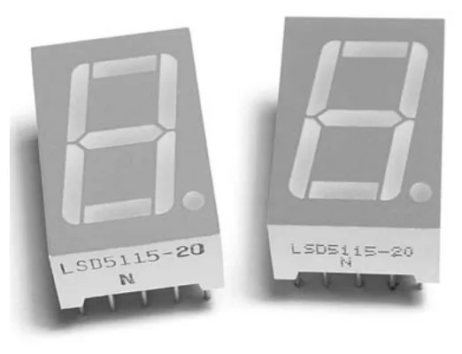
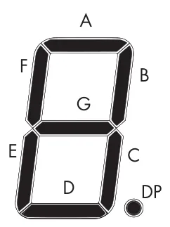
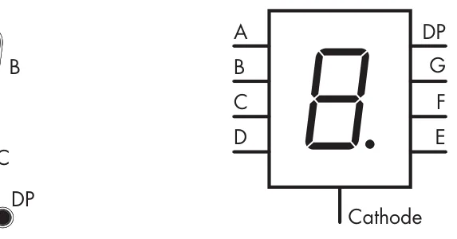
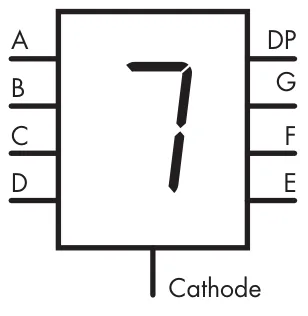

LEDs are fun, but there are limits to the kinds of data that can be displayed with individual lights. In this section we’ll begin working with numeric digits in the form of seven-segment LED displays, as shown in Figure 6-9.

These displays are perfect for displaying numbers, and that’s why you’ll find them used in digital alarm clocks, speedometers, and other numeric displays. Each module in a seven-segment LED display consists of eight LEDs. The modules are also available in different colors. To reduce the number of pins used by the display, all of the anodes or cathodes of the LEDs are connected together and are called common-anode or common- cathode, respectively. Our projects will use common-cathode modules.
The display’s LEDs are labeled A to G and DP (for the decimal point). There is an anode pin for each LED segment, and the cathodes are connected to one common cathode pin. The layout of seven-segment LED displays is always described as shown in Figure 6-10, with LED segment A at the top, B to its right, and so on. So, for example, if you wanted to display the number 7, then you would apply current to segments A, B, and C.
The pins on each LED display module can vary, depending on the manufacturer, but they always follow the basic pattern shown in Figure 6-10. When you use one of these modules, always get the data sheet for the module from the retailer to help save you time determining which pins are which.
We’ll use the schematic symbol shown in Figure 6-11 for our seven-segment LED display modules.


Controlling the LED
We’ll control the LED display using the method discussed in Project 17, by connecting pins A through DP to the shift register outputs Q0 to Q7. Use the matrix shown in Table 6-2 as a guide to help you determine which segments to turn on and off to display a particular number or letter.
The top row in the matrix is the shift register output pin that controls the segments on the second row. Each row below this shows the digit that can be displayed with the corresponding binary and decimal value to send to the shift register.
| SR | Q0 | Q1 | Q2 | Q3 | Q4 | Q5 | Q6 | Q7 | |
|---|---|---|---|---|---|---|---|---|---|
| Segment | A | B | C | D | E | F | G | DP | Decimal |
| 0 | 1 | 1 | 1 | 1 | 1 | 1 | 0 | 0 | 252 |
| 1 | 0 | 1 | 1 | 0 | 0 | 0 | 0 | 0 | 96 |
| 2 | 1 | 1 | 0 | 1 | 1 | 0 | 1 | 0 | 218 |
| 3 | 1 | 1 | 1 | 1 | 0 | 0 | 1 | 0 | 242 |
| 4 | 0 | 1 | 1 | 0 | 0 | 1 | 1 | 0 | 102 |
| 5 | 1 | 0 | 1 | 1 | 0 | 1 | 1 | 0 | 182 |
| 6 | 1 | 0 | 1 | 1 | 1 | 1 | 1 | 0 | 190 |
| 7 | 1 | 1 | 1 | 0 | 0 | 0 | 0 | 0 | 224 |
| 8 | 1 | 1 | 1 | 1 | 1 | 1 | 1 | 0 | 254 |
| 9 | 1 | 1 | 1 | 1 | 0 | 1 | 1 | 0 | 246 |
| A | 1 | 1 | 1 | 0 | 1 | 1 | 1 | 0 | 238 |
| B | 0 | 0 | 1 | 1 | 1 | 1 | 1 | 0 | 62 |
| C | 1 | 0 | 0 | 1 | 1 | 1 | 0 | 0 | 156 |
| D | 0 | 1 | 1 | 1 | 1 | 0 | 1 | 0 | 122 |
| E | 1 | 0 | 0 | 1 | 1 | 1 | 1 | 0 | 158 |
| F | 1 | 0 | 0 | 0 | 1 | 1 | 1 | 0 | 142 |
For example, to display the digit 7 as shown in Figure 6-12, we need to turn on LED segments A, B, and C, which correspond to the shift register outputs Q0, Q1, and Q2. Therefore, we will send the byte B1110000 into the shift register (with shiftOut set to LSBFIRST) to turn on the first three outputs that match the desired LEDs on the module.

In the next example, we’ll create a circuit that displays, in turn, the digits 0 through 9 and then the letters A through F. The cycle repeats with the decimal-point LED turned on.